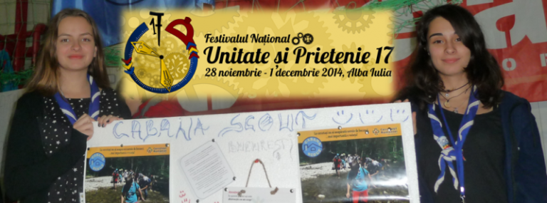

Și noi am fost la UP!

A trecut aproape o lună de la UP17, dar ecourile evenimentului încă nu s-au stins… Am provocat cele două exploratoare ale grupului nostru care au participat la UP anul acesta să ne împărtășească impresiile cu care s-au întors de la Alba Iulia… și iată ce au avut de spus:
DIANA: Cercetasia inseamna prietenie, unitate, fraternitate. Si unde intalnesti aceste calitati, daca nu la campul cercetasesc “UP” – Unitate si Prietenie?
Anul acesta, in perioada 28 noiembrie-1 decembrie, a fost a 17-a editie al faimosului UP.
Si ca sa incepem frumos anii in calitate de exploratoare, eu cu colega mea de centru, Ilinca, am pornit spre aventura UP.
Desi Grupul Cabana Scout a fost reprezentat de doar doua cercetase, pot spune ca am avansat ca si centru. Ne-am implicat in toate activitatilile, participand si la targul centrelor locale.
A fost prima mea experienta UP si nu regret nicio secunda! Chiar la inceput, am fost incantata ca putem participa si nu a contat ca eram doar doua exploratoare din centrul nostru, intr-un final reuseai sa te imprietenesti cu toata lumea!
Ateliere diverse, organizatia excelenta, nerabdarea de a-i vedea pe prietenii din orasele indepartate si programul care ne-a permis sa vizitam si sa ne acomodam cu orasul de poveste, Alba Iulia, m-au facut sa vreau sa particip si la viitoarele campuri UP.
O sala de sport plina de zambete, cantece, glume si ceea ce este cel mai important: un loc unde am descoperit oameni minunati cu care am creat prietenii de nedescris!
Poate cand citesti acum nu ma crezi ca se poate ca in aproape patru zile lista ta de prieteni sa se tripleze. Insa e adevarat, acest lucru il promoveaza UP-ul: prietenia!
Imi e dor de UP, imi e dor de toti cei care au contrbuit in realizarea unui camp pe care nu-l voi uita niciodata!
ILINCA: No, bun. Up-ul a fost o nouă experiență. Ce e drept, sunt in cercetasie doar de un an si jumătate. Astfel, am avut ocazia sa vad ce inseamna pentru prima dată un eveniment cercetăşesc departe de casă.
Dupa un drum lung și obositor si după ce am ajuns acolo, m-aș fi așteptat ca toata lumea sa fie obosită. Nu a fost deloc așa, ba chiar forfota din sala de sport si de la UPub îmi demonstrau contrariul. Tot așa, am văzut cât de mulți cercetași se cunosc reciproc. Până la finalul UP-ului, ajutată și de prietena mea, Diana, am reușit sa îmi fac si eu destul de mulți amici.
Însă pe lângă toată agitația și gălăgia cercetaşilor, am avut parte si de activități pe măsură. In fiecare zi am avut cate un atelier. Sincer, am avut norocul de a participa la atelierele de Ceramica, sâmbăta, si de Artizanat UP duminica.
Dupa aceste ateliere urma jocul “Mașina timpului”. De nu ne-am plimbat in sus si in jos prin cetate… si ciocolata caldă de la pub-ul “La poartă”… Acum cand ma gândesc, imi pare rau ca nu am profitat mai mult de cupoanele cu reducere.
Nici nu aș mai știi ce sa spun… am atâtea in minte, ori nici nu pot sa imi pun ideile cap la cap. Cert este ca am fost fascinata, atât de activități, cât și de libertatea ce ni s-a oferit in cadrul evenimentului. Plecând de acolo am realizat cât de mult i se potrivește numele…”Unitate și Prietenie”.